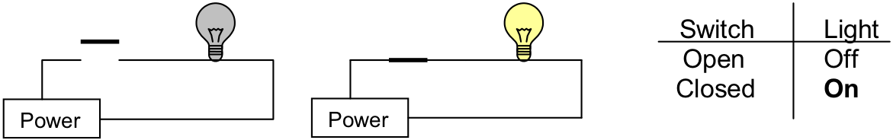
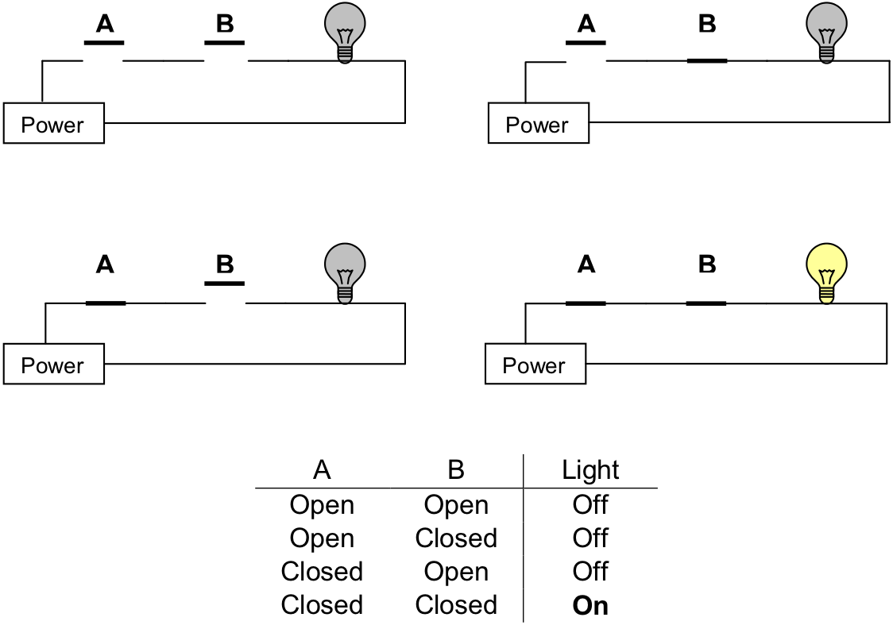
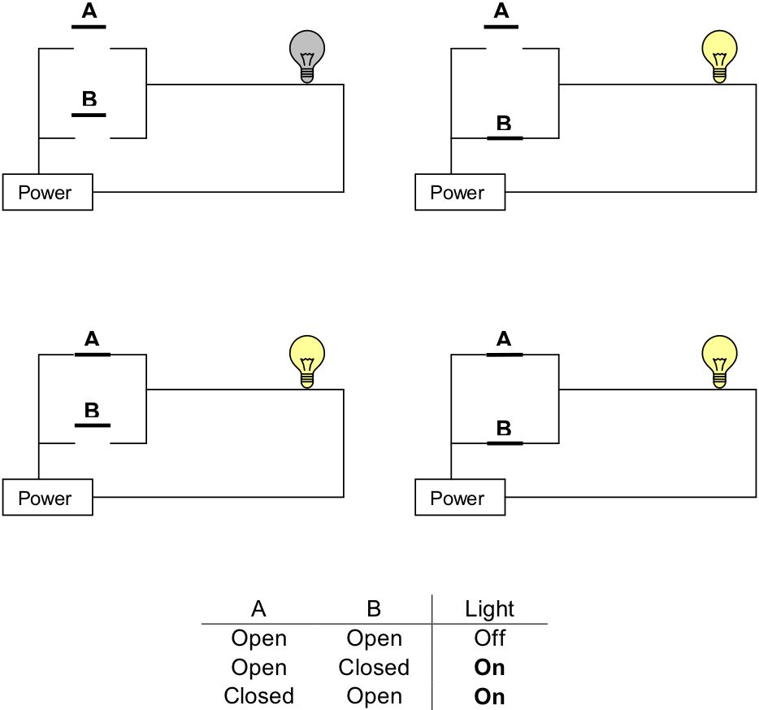
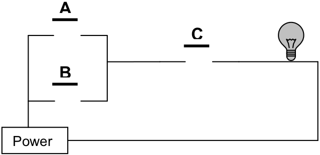

Our first model uses mechanical switches that can be either open or closed. These switches are similar to the electrical switches in your home. We will assume that these switches are connected to a source of power that can supply current. Light bulbs will be used to indicate the presence or absence of current. illustrates both the switches and light bulbs.

Representations of switches and light bulbs
The simplest circuit that can be built contains a power supply, a single switch, and a light bulb. If the switch is open, the light is off; if the switch is closed, the light is on. shows these two situations and records this information in tabular form.
Open and closed switches
Two switches in series – power flows only when both A and B are closed
We can increase the complexity of our circuit somewhat by adding a second switch between the first switch and the light bulb. illustrates the four possible configurations of this circuit: (1) both switches open, (2) the first switch open and the second closed, (3) the first switch closed and the second open, or (4) both switches closed. The circuits of are called series circuits since the two switches occur on the same “path” from the power source back to itself. In series circuits, when either or both of the switches, are open, power will not flow and the light bulb will be off. Only when both switches are closed, does power flow and the light bulb illuminates. Said another way, if both switch A and switch B are closed, then the light will turn on. The relationship between the states of the two switches (open or closed) and the state of the light bulb (on or off) is summarized in tabular form in .
Another type of circuit can be designed using two switches. This second type of circuit arranges the switches in parallel rather than in series. In a two-switch parallel circuit , each of the switches is placed on a separate path between the power source and the light bulb.
Two switches in parallel – power flows when either A or B is closed
illustrates the four possible configurations of a two-switch parallel circuit. As was the case with the series circuit, there are four possible configurations of the circuit: (1) both switches open, (2) the first switch open and the second closed, (3) the first switch closed and the second open, or (4) both switches closed. When both switches are open power does not flow and the light bulb is off. However, whenever either or both of the switches are closed, power flows and the light will turn on. Said another way, if switch A or switch B is closed, then the light will turn on.
More complex circuits with three or more switches are possible. In the exercises below you will develop some circuits with three switches.
Exercises for
-
Draw a circuit with three switches, called A, B, and C, in series connected to a power supply and a light bulb. Summarize in tabular form the relationship between the states of the three switches (open or closed), and the state of the light bulb (on or off). Your table should resemble the one given in , but contain eight, instead of four, rows.
-
Draw a circuit with three switches, called A, B, and C, in parallel connected to a power supply and a light bulb. Summarize in tabular form the relationship between the states of the three switches (open or closed), and the state of the light bulb (on or off). Your table should resemble the one given in , but contain eight, instead of four, rows.
-
Given the circuit below, summarize in tabular form the relationship between the states of the three switches (open or closed), and the state of the light bulb (on or off). 
-
Suppose that a circuit contains n switches. How many different combinations of values are possible for these n switches? In other words, how many rows would a table summarizing the relationship between the switches and light bulb require?